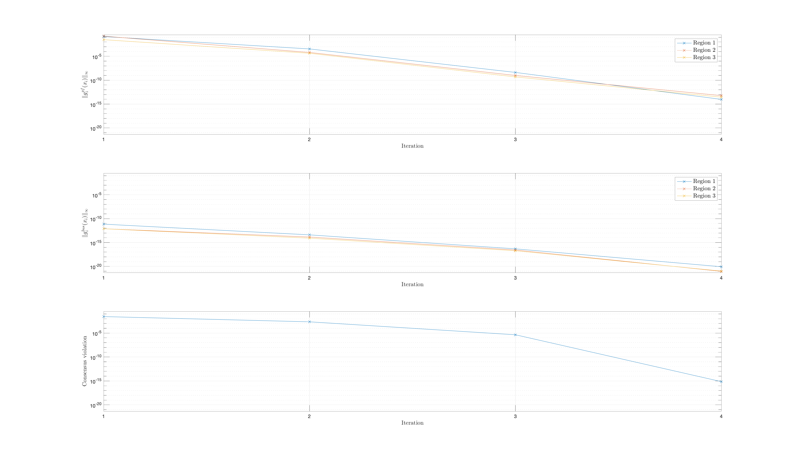

Example
This is a beginning-to-end-example about how to solve distributed power flow with the Aladin toolbox. Click here to see the plain code.
Setup
Starting from the home directory of the package, let’s make a tabula rasa and switch to the use case folder
1 2 | |
If not done already, add the source files to the path
1 2 3 | |
We would like the following fields to be merged from the case files
1 | |
Specify inputs
We first generate a name struct that acts as a de-facto global variable for naming structs.
1 | |
Next, we specify the master and worker systems by loading their case files.
1 2 | |
Additionally, we need to specify who is connected to whom. These connections are specified in a connection array:
1 2 3 | |
The first row reads: system 2 is connected to system 1, specifically the first bus of system 2 is connected to the second bus of system 1. Likewise, the second row reads: system 2 is connected to system 3, specifically the second bus of system 2 is connected to the third bus of system 3.
However, we need not just to specify who is connected to whom, but also how. Hence, we model a connecting transformer.
1 2 3 4 5 | |
Finally, we can call build_connection_table.
1 | |
Problem formulation
Having done the setup, we are now ready to use the three main blocks: the case file generator, the case file splitter, and the case file parser:
Case file generator
Calling the case file generator means to specify the master and the workers together with the connection table, and what fields shall be merged.
The most convenient way is to call run_case_file_generator
1 | |
The output is a case file that has a lot of extra information.
Case file splitter
The output of the case file generator is the input to the case file splitter, together with connection information.
We call run_case_file_splitter
1 | |
The output is, again, a case file that has a lot of extra information.
Case file parser
Finally, the case file parser takes the output from the splitter, and generates a problem formulation, using generate_distributed_problem_for_aladin.
Note that we can need to specify whether we create a feasibility or a least-squares problem formulation.
1 | |
The problem formulation is a struct that contains all relevant equations.
Finally, we need to add a numerical solver (fmincon, fminunc, worhp, Casadi+Ipopt)
1 2 | |
Problem solution
Having created a valid problem formulation, we rely on the Aladin toolbox to solve the problem.
Aladin requires a set of parameters (using the default values is also possible, and usually a good idea).
We use the function solve_distributed_problem_with_aladin
1 2 3 4 5 | |
The function returns four outputs: xsol_aladin and xsol_stack_aladin are both cells with as many entries as there are regions.
In each entry, the state of region i is stored: in xsol_aladin it is a matrix form with as many rows as there are buses in the region, and the four columns being the voltage angle, the voltage magnitude, the net active power, and the net reactive power; in xsol_stack_aladin, each entry is the vertically stacked equivalent of xsol_aladin.
The third output, mpc_sol_aladin, is a valid case file that can be used for further inspection.
The fourth output contains logging information from the Aladin toolbox.
Comparison
How do we know that the solution we computed is actually correct?
For that purpose, there is a validation function such as validate_distributed_problem_formulation.
Simply put, the function uses matpower to validate that the generated problem formulation stored in problem is correct.
1 | |
The outputs have the same format as the first two outputs (xsol_aladin & xsol_stack_aladin) from the problem solution.
To compare the results we call compare_results, which generates a humand-readable table output.
1 | |
Post-processing
There is a handy function for post-processing, This function provides a graphical impression of the overall constraint violations for both the power flow equations and the consensus violations.
1 | |
For this example the violation of the power flow equations, the bus specifications, and the consensus constraints are shown below per Aladin iteration.

Entire code
1 2 3 4 5 6 7 8 9 10 11 12 13 14 15 16 17 18 19 20 21 22 23 24 25 26 27 28 29 30 31 32 33 34 35 36 37 38 39 40 41 42 43 44 45 46 | |